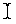

Diagrams that are made by some TCM diagram editor are a special kind of graph with a certain representation (layout, view). Each TCM editor is a specialization of the generic graph editor. A graph consists of a set of subjects. A subject is either a node or an edge that connects two subjects. Subjects are of different node types and edge types. For example, a TDFD data flow diagram graph consists amongst others of nodes of type data process and nodes of type data store, and edges of type data flow.
The graphs that are edited with TCM contain edges that connect exactly two (not necessarily different) subjects. So some kind of special relationship between more than two nodes, for instance the specialization relationship in an ER diagram (made by the TESD editor), is specified in TCM as a node (a taxonomy junction node in this case) that is connected by three or more different edges (generalization or is-a relationship edges in this case).
In general, edges connect two (not necessarily) different subjects. So in principle it is possible that an edge connects to another edge. This feature is available in the generic diagram editor (TGD) and also in a limited form in a few of the specific diagram editors. In the other editors an edge connects only nodes, it never connects edges.
In a representation of a graph, nodes and edges are shown as shapes. In the case of nodes the representing shapes are boxes, diamonds, ellipses etc. In the case of edges, shapes are lines, arrows etc. In general, there is a many-many relationship between a certain subject type and a certain shape type and also between a particular subject instance and a particular shape instance. It is possible that a subject type is represented by more than one shape type. For instance a class-diagram made by TSSD can contain different kinds of class boxes (e.g. boxes with three compartments that show the class name, attributes and operations, and boxes that only contain two compartment to show only the name and the attributes). Also, it is possible that a particular subject instance is represented by more than one shape instance. This feature can be used when you want to represent the same subject at different positions in the same diagram (duplication). But in most cases, the relationship between subjects and their representations is one-one and for this reason, subjects and their shape representations will often be mixed up.
A TCM diagram is composed of a graph, its representing shapes, and extra diagram information, such as the diagram name, the author and the creation date. A TCM diagram has an empty graph after creation. You can build a graph by interactively drawing it with the TCM user interface, node by node, edge by edge.
Some diagrams are hierarchic. This means that the underlying mathematical structure is a hierarchic graph rather than a graph. In a hierarchic graph, nodes are organized in trees: a node may be a child of another node. The parent-child relationship is represented by inclusion: a node shape contains the node shapes of its children. (In hierarchic documents, duplication is forbidden. This ensures that the parent-child relationship is acyclic.) In non-hierarchic diagrams, overlapping of nodes has no special meaning.
TCM documents should satisfy certain constraints. Most constraints are specific for the particular diagram technique supported by the editor. Many constraints are checked by TCM. The constraints that are checked, are classified according to how TCM deals with possible violations.
Soft constraints are checked by TCM when the Check Document command is issued by you. Check Document displays a list of error messages in a pop-up window and the nodes and edges that cause these errors are selected in the diagram. As opposed to the previous two classes of constraints, you are responsible for correcting the diagram.
It is possible that some immediately enforced constraints can still be violated by some user command. Such a constraint is then classified as both an immediately enforced and a soft constraint. Example: if a part of a diagram is copied and pasted into the same diagram, the unique name constraint is a soft constraint as it can be violated by the paste command. But when you have edited the text of one of the nodes in the diagram, and you issue the stop edit command, the unique name constraint can and will be immediately enforced.
For creating a node, first choose the desired node type from the node tiles. Click button-1 in the background of the drawing area, at the desired position. A new node shape appears, having its center at the position where is clicked and having the shape as indicated by the selected node type in the tiles. The node shape is surrounded by a set of selection handles which are black or grey rectangles, showing that the shape is selected. Selection handles of a node shape are also used for resizing the node.
After creating the edge, the edge is selected which is visible by a selection handle on each line point. You can adjust the line points by moving the handles; see section 3.6.
When an edge is created and it is the only straight edge connecting this particular couple of nodes, it will go (virtually) through the center points of the nodes. When there are multiple straight edges connecting the same pair of nodes, they will be equally distributed by default over the opposing sides. Segmented and curved edges are not equally distributed when they connect the same pair of nodes. TCM tries to intersect the first and last segment of a segmented line orthogonally with the sides of the connected nodes. If this is geometrically impossible, the segment will be directed to the center of the node like with straight edges. For understanding how it works it helps when you try it out yourself.
Tip: When you want to enforce that a straight edge is always orthogonal to a node, then you can draw a segmented line of three points that looks like a straight line. You enforce then that the line is always connected orthogonally with both of the nodes (providing that this is geometrically possible). This gives often a more pleasant optical result especially when you want to connect two nodes that differ a lot in size.
It is possible to move the end points of an edge as well, in the same way as you move the intermediate points. When you drag with button-1 the handle of an end point to another position then the new end point will be the position at the border of the node shape that is the closest to where you released the handle. However, when you drag with button-1 the handle of an end point into a different node shape then the edge will be redirected to that node. This means that you can change the nodes that an edge connects.
After an edge is created you can add extra intermediate points. When you drag with button-1 on an existing line, a new intermediate point is created at the position where you stop dragging, and a new segment will be added to the line. Press Button-2 on a line handle to remove the line handle/segment from an existing line.
In TGD and some other editors it is possible to connect an edge with an edge like in figure 3.2. You create these kinds of edges in the same way as edges that connect nodes. Only you start to press button-2 while the mouse pointer is positioned at an edge and/or you release button-2, after dragging, when the mouse is on some edge.
Shapes have a selection area. For lines, it is a band around the segment(s) of the line. The selection area for node shapes changes when you toggle hierarchy on or off: In non-hierarchic documents, it is just the inside of the node shape. In hierarchic documents, the selection area is a band around the visible parts of the node shape (boundary lines, interior lines, text labels).
The following operations on the selection exist:
For getting into edit mode make sure that the shape with the label that you want to edit is the only selected shape. When you move the mouse pointer into the single selected shape, the mouse pointer turns into a . By clicking button-1 on the shape or typing the first character you go into edit mode. See section 2.5.1 for the different text edit commands that exist in TCM. These apply to all document editors including all diagram editors.
Every TCM diagram and tree editor has a special node type called Comment, which solely consists of a text label and is intended to add comment to the diagram. This node type cannot be connected by any other edge, except in the generic diagram editor, TGD. But comment nodes can be selected, moved and of course edited, like any other node type.
Tip: If you want to edit the label of an edge, and you try to select it first with button-1 you could miss the edge and create an unwanted node. To avoid this, make the selection empty and select the edge by button-2 instead, because, when you miss no node is created.
When you drag a line outside a line handle with button-1, a new line handle will be created and the line is extended with an extra segment. When you hit a line handle with button-2 (instead of button-1), the line handle is deleted and consequently the line will be deprived of a segment.
When you want to abort a move command, while you are moving, you have to click button-2.
Unlike moving, resizing only works on one shape at the time i.e. it does not influence the other shapes of the selection. If you want to resize multiple shapes in one command then you could use the Same Size command in the Edit menu. The Same Size command makes the size of all selected node shapes the same size as the first selected shape (the shape with the black handles). The first selected shape should be a node shape of course. The edges in the rest of the selection are ignored by this command.
Tip: when node shapes have been moved or resized then their adjacent edges are redrawn and all their handles and labels are placed back to their default positions. This is sometimes undesirable 3.3. To avoid that your effort gets lost, postpone moving edge labels and handles to their final positions until when you think that the connected nodes are OK. Draw the graph first and then you can bother about the layout.
The Edit menu command Delete All removes all subjects, selected or not. Before the command is executed, you are first asked by means of a question dialog if you really want to delete everything.
Fortunately, like all commands, deletion commands can be undone with Undo.
You can either Cut (<Ctrl+X>) or Copy (<Ctrl+C>) the selection to the buffer. When you perform a cut, all selected subjects are copied into the buffer, and the selection is removed from the diagram (including the unselected edges that are adjacent to the selected nodes). When you perform a copy, no subjects are removed from a diagram, but a copy of the selection is made and put into the buffer. Both Cut and Copy copy the unselected nodes that are connected by selected edges into the paste buffer.
Pasting means that the contents of the paste buffer is being copied into the diagram. When you perform a Paste (<Ctrl+Y>) command, a stippled box is shown that has the size of the pasted area which is attached to the mouse pointer near its top-left corner. When you click button-1, the subjects in the paste buffer are copied into the diagram. The Append Diagram command is also implemented as a paste command. When you want to abort pasting while you are moving the paste box, you have to click button-2.
You can paste the same contents of the paste buffer more than once because always a copy of the contents is made. Pasted nodes and edges are new nodes and edges, not duplicates of existing nodes or edges. The paste buffer remains intact when you load another diagram, so it is possible to cut and paste between different diagrams (but only in the same editor).
It is possible to represent one node by several instances of the same shape in non-hierarchic diagrams. The Duplicate command copies the node shapes in the selection and puts them into a box, lust like the Paste command. However, the duplicate command does not make use of the paste buffer. The copied node shapes can be positioned at an arbitrary place, just like the Paste command. Edges cannot be duplicated 3.4. Unlike the Copy command, the new node shapes have the same node subject as the original. When a node has duplicate shapes then all these shapes have a small asterisk in the top-left corner.
When the label of a duplicate shape is updated then all its duplicate shapes are updated too and when a node is deleted (with Delete) then all the duplicate shapes of this node are deleted too by that command.
The duplicate command is intended to be used when the same node has to be represented at different places to avoid cluttering up the diagram. For instance, in a DFD, the same external entity or data store is often drawn at different positions in the same diagram, and TCM keeps track that these are in reality representations of the same subjects.
The Delete command can be used to delete all selected duplicate shapes, see section 3.8. When all the shapes of a node are deleted then the node itself is deleted too. But you can delete individual duplicate shapes as well.
All Update shape property commands are undo-able commands and they are called from the Properties menu of the main window.
The dialog also shows a preview of some text in the selected font so you can see how it will look in your diagram. When you press the Apply-button then the dialog is dismissed and of each selected shape, the font is updated to the selected font.
With the Default Text Font entry from the Default Properties submenu you get a similar dialog window. Here you can set the default text font. The text shapes of every newly created node or edge will get this font. The page headers and numbers are also drawn in this default font.
Note that find and replace work on entire shapes at the same time. But keep in mind that a shape could have multiple text labels and each individual text label could match the string to find or the string to replace multiple times (at least when you look for a substring). When you want to find or replace within a single text label or table cell, you should load that text label first in the out-line text editor and then do a find or replace within that dialog. The out-line text editor only works on a single text shape at the time.
Note also that you can fill an empty string for the string to find in both dialogs. An empty string matches only the text shapes that are empty. You can also fill in an empty string in the replace with text field, providing that the string to find field is not empty.
While you are busy performing a command, like creating an edge, moving the paste box or resizing or moving some shapes, you can abort the command by clicking button-1 during edge creation or button-2 for the other commands. When you have aborted, nothing is changed and the undo or redo of that command is not possible nor necessary and the undo menu entry lists the command issued before the aborted command.
Figure 3.6 summarizes all atomic commands that are available in every diagram editor. These commands are either issued by the mouse, via the Edit or Properties menu, or via an accelerator. Each of these commands is undo- and redo-able.
The generic diagram editor is a diagram editor that has all the features that are described in this chapter.
The generic diagram editor has three node types generic node, empty node and comment, and one edge type, generic edge. Empty nodes are nodes that don't have a name label. TGD has no immediately enforced and no soft constraints. A generic or empty node can be represented by a number of node shape types and a generic edge can be represented by a number of line types, see figure 3.8.
Each node shape and each line can be drawn in the line styles solid, dashed or dotted. You can set the default line style of the node shapes via an option menu below the tiled node buttons in the main window. The default line style for lines can be set via the same kind of option menu below the tiled edge buttons. The line style of a node shape or line can be changed via the Update Line Style command in the properties menu. This command sets the line style of all selected shapes to the chosen line style.
All node shapes in TGD, except comments, bulls eyes, black dots and solid horizontal and vertical bars can have an index text label. If you want to see these text labels select the create/edit index toggle button below the node tiled buttons. By default the index labels are numbers between 1 and the total number of nodes having an index. Each new node shape will get the lowest currently unused index number higher than 0. When you deselect the create/edit index toggle, all node indexes remain visible, but new node shapes will not get an index number. When the create/edit index toggle is selected you can edit the node indexes just like the name of a node. You can create a new index label for a node shape by editing the empty index label of the node shape. The node index can be made any string in TGD. If you issue the Renumber Indexes command from the Edit menu of TGD then the current indexes of the diagram are renumbered. Each node shape that has an index will get as index a unique number between 1 and the total number of node shapes with an index.
In TGD it is possible to convert between different node shape types. For this, select the shapes that you want to convert to some other node shape type and choose the desired shape type from the submenu of Convert Node Shape Type in the Edit menu. This will pop up a dialog window containing toggle buttons for the various node shape types you can convert to. See figure 3.7 for the available node shape types. This makes it possible to change a box in an ellipse or vice versa. Note however that only the representation is changed. The node itself is not changed.
In TGD, every node, including comment nodes, can be connected by any type of edge and given the facts that you can make comment nodes invisible by emptying its text string or make the line style of a node shape invisible and that you can connect edges with edges too, you can make very complex drawings in TGD. The arrows and other kinds of line endings of the lines in TGD can be changed via the Update Line End command in the Properties menu.
|